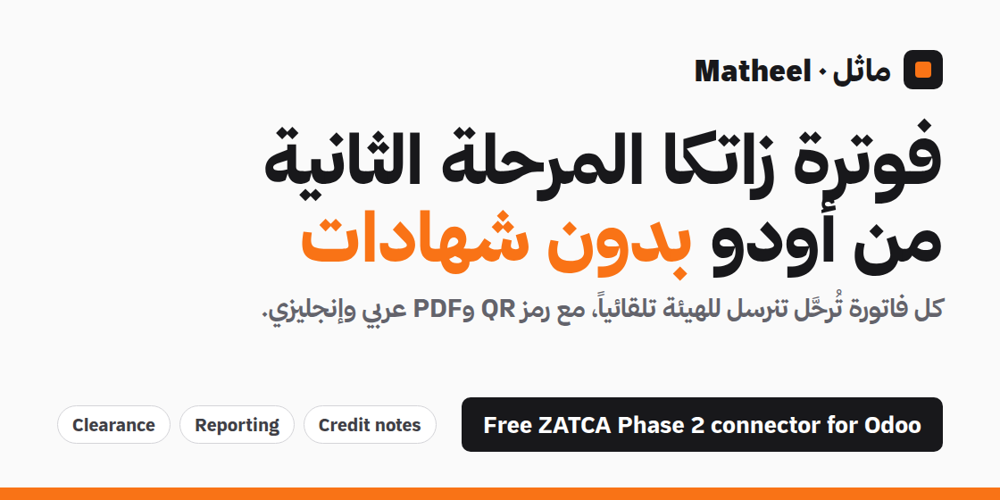

<!-- Odoo App Store page for the Matheel ZATCA connector: what it does, setup in three steps, pricing, support. -->
<section class="oe_container">
  <div class="oe_row oe_spaced" style="max-width:960px;margin:auto">
    <h2 class="oe_slogan" style="color:#18181b">ZATCA Phase 2 e-invoicing for Odoo, without certificates</h2>
    <h3 class="oe_slogan" dir="rtl" style="color:#63636b">&#1601;&#1608;&#1578;&#1585;&#1577; &#1586;&#1575;&#1578;&#1603;&#1575; &#1575;&#1604;&#1605;&#1585;&#1581;&#1604;&#1577; &#1575;&#1604;&#1579;&#1575;&#1606;&#1610;&#1577; &#1605;&#1606; &#1571;&#1608;&#1583;&#1608;&#1548; &#1576;&#1583;&#1608;&#1606; &#1588;&#1607;&#1575;&#1583;&#1575;&#1578; &#1608;&#1604;&#1575; &#1573;&#1593;&#1583;&#1575;&#1583;&#1575;&#1578; &#1605;&#1593;&#1602;&#1617;&#1583;&#1577;</h3>
    
    <p style="font-size:17px">
      Every customer invoice and credit note you post in Odoo is <b>cleared</b> (B2B) or <b>reported</b> (B2C) to ZATCA
      automatically. ZATCA's stamped XML and a bilingual Arabic/English PDF/A-3 are attached to the invoice, and the ZATCA QR
      is printed on Odoo's own invoice. The signing, certificates (CSID), hashing chain and ZATCA's rule changes are handled
      by <a href="https://matheel.app">Matheel</a>, a Saudi ZATCA API, so there is nothing to install on your server.
    </p>
    <div dir="rtl" style="font-size:17px;background:#fafafa;border:1px solid #e4e4e7;border-radius:12px;padding:16px 20px;margin:16px 0">
      &#1603;&#1604; &#1601;&#1575;&#1578;&#1608;&#1585;&#1577; &#1571;&#1608; &#1573;&#1588;&#1593;&#1575;&#1585; &#1583;&#1575;&#1574;&#1606; &#1578;&#1615;&#1585;&#1581;&#1617;&#1604;&#1607; &#1601;&#1610; &#1571;&#1608;&#1583;&#1608; &#1610;&#1578;&#1605; &#1575;&#1593;&#1578;&#1605;&#1575;&#1583;&#1607; (B2B) &#1571;&#1608; &#1575;&#1604;&#1573;&#1576;&#1604;&#1575;&#1594; &#1593;&#1606;&#1607; (B2C) &#1604;&#1607;&#1610;&#1574;&#1577; &#1575;&#1604;&#1586;&#1603;&#1575;&#1577; &#1608;&#1575;&#1604;&#1590;&#1585;&#1610;&#1576;&#1577; &#1608;&#1575;&#1604;&#1580;&#1605;&#1575;&#1585;&#1603; &#1578;&#1604;&#1602;&#1575;&#1574;&#1610;&#1575;&#1611;.
      &#1605;&#1604;&#1601; XML &#1575;&#1604;&#1605;&#1593;&#1578;&#1605;&#1583; &#1605;&#1606; &#1575;&#1604;&#1607;&#1610;&#1574;&#1577; &#1608;PDF &#1593;&#1585;&#1576;&#1610; &#1608;&#1573;&#1606;&#1580;&#1604;&#1610;&#1586;&#1610; &#1610;&#1615;&#1585;&#1601;&#1602;&#1575;&#1606; &#1576;&#1575;&#1604;&#1601;&#1575;&#1578;&#1608;&#1585;&#1577;&#1548; &#1608;&#1585;&#1605;&#1586; QR &#1610;&#1592;&#1607;&#1585; &#1601;&#1610; &#1601;&#1575;&#1578;&#1608;&#1585;&#1577; &#1571;&#1608;&#1583;&#1608; &#1575;&#1604;&#1605;&#1591;&#1576;&#1608;&#1593;&#1577;.
      &#1575;&#1604;&#1578;&#1608;&#1602;&#1610;&#1593; &#1608;&#1575;&#1604;&#1588;&#1607;&#1575;&#1583;&#1575;&#1578; &#1608;&#1587;&#1604;&#1587;&#1604;&#1577; &#1575;&#1604;&#1601;&#1608;&#1575;&#1578;&#1610;&#1585; &#1608;&#1578;&#1581;&#1583;&#1610;&#1579;&#1575;&#1578; &#1602;&#1608;&#1575;&#1593;&#1583; &#1575;&#1604;&#1607;&#1610;&#1574;&#1577; &#1603;&#1604;&#1607;&#1575; &#1593;&#1604;&#1609; &#1605;&#1575;&#1579;&#1604;.
    </div>

    <h3>Set up in three steps &#183; &#1579;&#1604;&#1575;&#1579; &#1582;&#1591;&#1608;&#1575;&#1578;</h3>
    <ol style="font-size:16px">
      <li>Install the module. Fill the company's VAT number, CR, address and building number.</li>
      <li>Settings &#8594; Accounting &#8594; <b>ZATCA e-invoicing (Matheel)</b>: keep <b>Sandbox</b> and leave the key empty to try it free,
        or paste your Matheel key and the OTP from the <a href="https://fatoora.zatca.gov.sa">Fatoora portal</a>.</li>
      <li>Press <b>Register device with ZATCA</b>. Done: post an invoice and watch its ZATCA badge turn green.</li>
    </ol>

    <h3>What's included</h3>
    <ul style="font-size:16px">
      <li>Standard (B2B, clearance) and simplified (B2C, reporting) invoices, credit notes linked to the original invoice.</li>
      <li>Discounts, multiple VAT categories (standard, zero-rated, exempt, out of scope with VATEX codes).</li>
      <li>A strict invoice chain: invoices are filed one at a time in posting order, and retried by themselves when ZATCA is down.</li>
      <li>VAT rounded the way ZATCA computes it, so Odoo's totals equal the legal invoice to the halala.</li>
      <li>An accepted invoice can't be reset to draft: corrections go through a credit note, as the law requires.</li>
      <li>Certificate renewal with a new OTP, from the same settings screen. Works on Odoo Community and Enterprise.</li>
    </ul>

    <h3>Pricing &#183; &#1575;&#1604;&#1571;&#1587;&#1593;&#1575;&#1585;</h3>
    <p style="font-size:16px">
      The module is free and open source (LGPL-3). The sandbox is free. Live filing needs a Matheel plan:
      <b>SAR 590 per year per device, unlimited invoices</b>, see <a href="https://matheel.app/#pricing">matheel.app</a>.
      Odoo partners: ask about the partner programme at <a href="mailto:hello@matheel.app">hello@matheel.app</a>.
    </p>

    <h3>Support &#183; &#1575;&#1604;&#1583;&#1593;&#1605;</h3>
    <p style="font-size:16px">
      <a href="mailto:hello@matheel.app">hello@matheel.app</a> &#183;
      <a href="https://matheel.app/docs">API docs</a> &#183;
      <a href="https://matheel.app/akhta">ZATCA error codes explained (Arabic)</a> &#183;
      <a href="https://github.com/matheel-app/matheel-odoo">source on GitHub</a>
    </p>
  </div>
</section>
